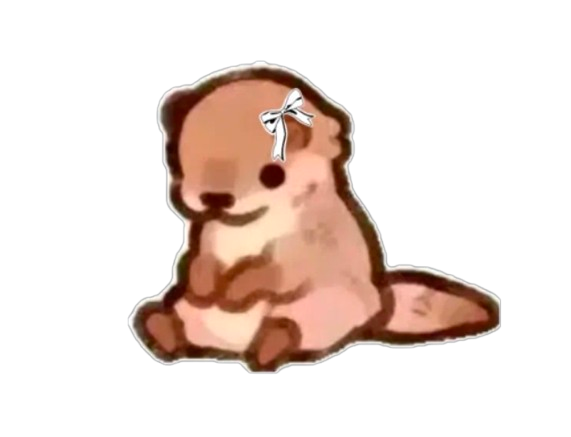

Somita tuvo un inicio difícil debido a problemas de salud menores por mala alimentación. Gracias a la dieta especial del refugio, ahora brilla y tiene muchísima fuerza.
Es muy tranquilo y prefiere la compañía de los humanos que la de otros hurones (a excepción de katsy). Es el compañera ideal para tardes de películas y relajación.
